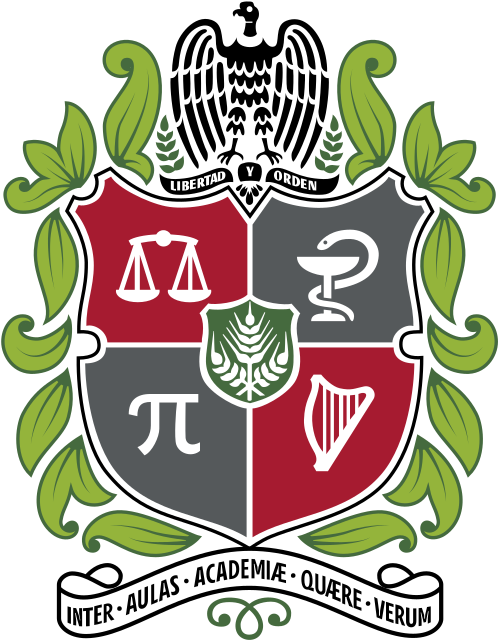
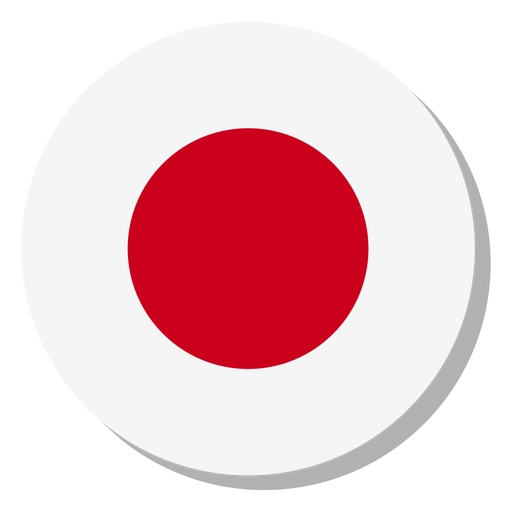
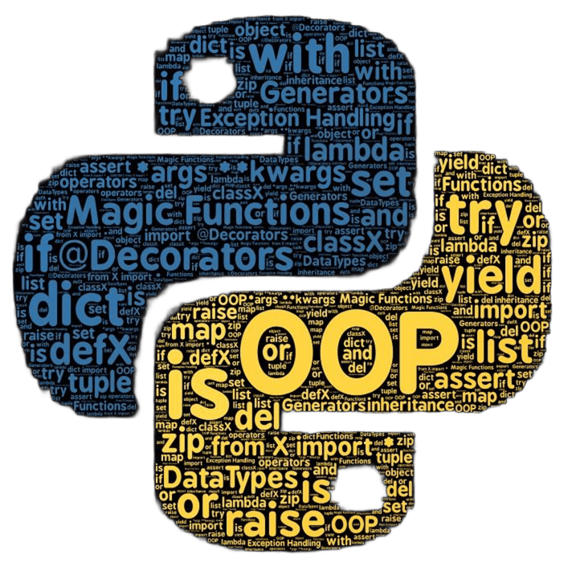

Formacion academica
-
Economía
-

Ing. Sistemas e Informática -
Técnico en Desarrollo de Software
Me defino como una persona analítica y reflexiva, con una inclinación natural hacia comprender el porqué de las cosas y no solo aceptar resultados. Valoro la claridad, el orden y la coherencia, tanto en la forma de pensar como en la manera de comunicar ideas, lo que me lleva a estructurar mis decisiones con criterio y fundamento. Asumo los desafíos con disciplina y constancia, manteniendo una actitud crítica que me permite cuestionar, ajustar y mejorar continuamente. Considero importante mantener un equilibrio entre la exigencia personal y la apertura al aprendizaje, entendiendo que el crecimiento implica tanto reconocer fortalezas como trabajar sobre las debilidades. Procuro actuar con responsabilidad y sentido práctico, buscando siempre que mis acciones tengan propósito y coherencia con mis principios.



Python